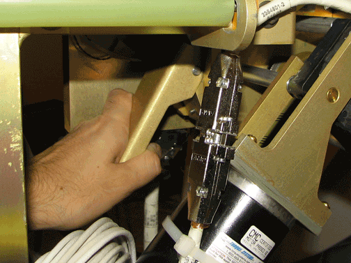
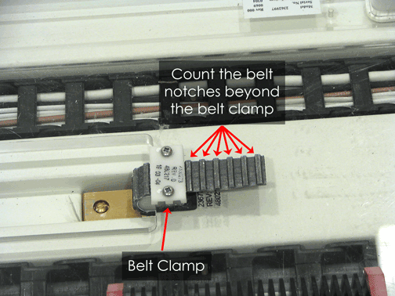
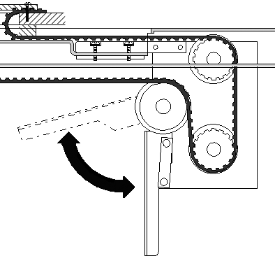
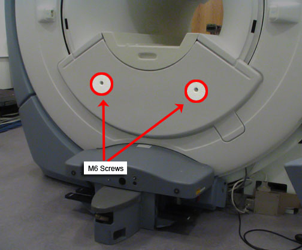
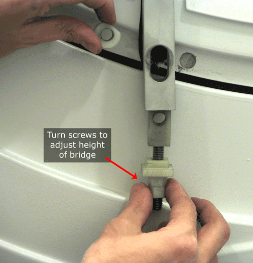
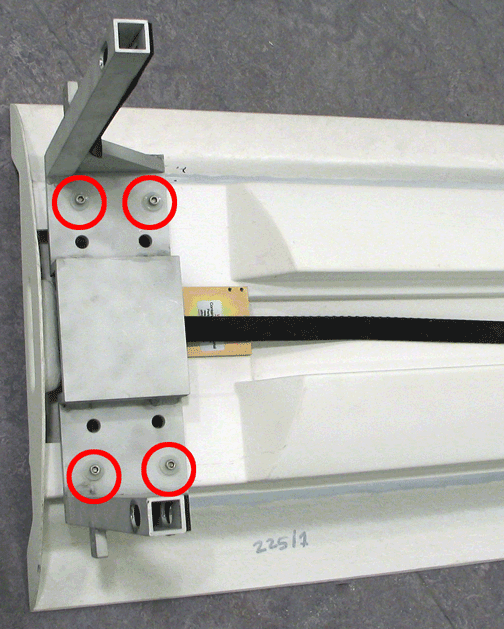
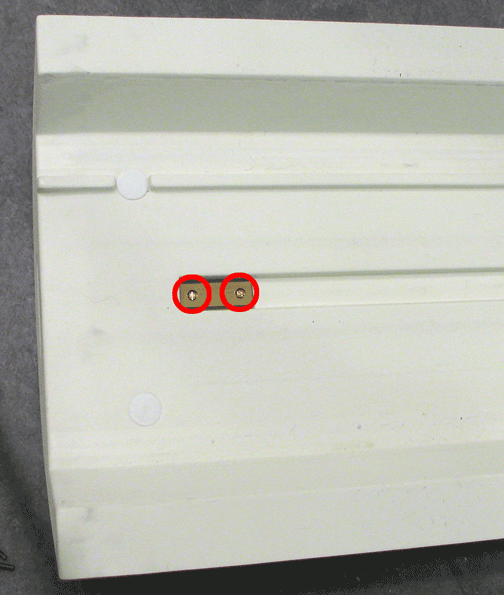
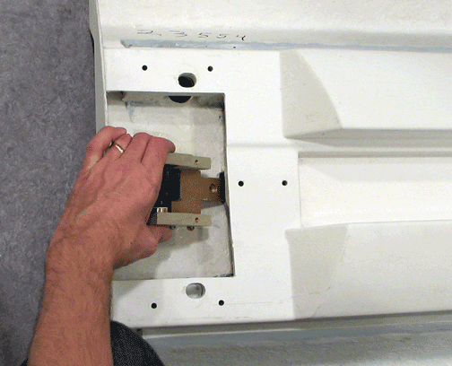

Operating Documentation
Direction 5133330-3, Rev# 14
Signa
EXCITE HD 3.0T Service Methods
Module Version 3.0, Version Date 10/31/08
Operating Documentation |
| Required Persons | Preliminary Reqs | Procedure | Finalization |
|---|---|---|---|
| 1 | Not Applicable | 30 to 75 | Not Applicable |
Procedure for replacing the patient transport split bridge. Plan on about 30 minutes to remove the bridge. Double the time if reinstalling the same bridge components. Plan on at least 75 minutes if installing a new bridge that requires subcomponents assembly. (See Replacing Bridge Part within Bridge Assembly.)
| Item | Qty | Effectivity | Part# | Manufacturer | |
|---|---|---|---|---|---|
| 17 mm wrench | 1 | - | - | - | |
| 5 mm Allen wrench | 1 | - | - | - | |
| Phillips screwdriver | 1 | - | - | - | |
| Flathead screwdriver | 1 | - | - | - | |
| Item | Qty | Effectivity | Part# | Manufacturer | |
|---|---|---|---|---|---|
| HDx Split Bridge Front | 1 |
When only replacing the bridge itself, reuse the currently installed front pulley and drive belt. See Replacing Bridge Part within Bridge Assembly. | 5150910 | - | |
| HDx Front Bridge ASM with Pulley and Belt | 1 |
When replacing the bridge and its accessories, pulley and drive belt are included. | 5150905 | - | |
| ||||
| FERROUS MATERIAL HAZARD! | ||||
| THE PULLEY ASSEMBLY CONTAINS PARTS MADE WITH FERROUS COMPONENTS. HOLDING THIS ASSEMBLY TOO CLOSE TO THE MAGNET BORE WILL FORCIBLY ATTRACT IT TO THE MAGNET. | ||||
| TO PREVENT POSSIBLE BODILY INJURY OR DAMAGE TO COMPONENTS, REMOVE THE ASSEMBLY DIRECTLY, NOT MOVING IT INto THE MAGNETIC FIELD MORE THAN IS NECESSARY. |
| ||||
| FERROUS MATERIAL HAZARD! | ||||
| THE FRONT BRIDGE SUPPORT ASSEMBLY CONTAINS PARTS MADE WITH FERROUS COMPONENTS. HOLDING THIS ASSEMBLY TOO CLOSE TO THE MAGNET BORE WILL FORCIBLY ATTRACT IT TO THE MAGNET. | ||||
| TO PREVENT POSSIBLE BODILY INJURY OR DAMAGE TO COMPONENTS, REMOVE THE ASSEMBLY DIRECTLY, NOT MOVING IT INto THE MAGNETIC FIELD MORE THAN IS NECESSARY. |
Position the LPCA to the far rear of the enclosure, and undock the patient table.
Detach the cradle from the LPCA.
Follow all LOTO procedures by turning off the applicable breaker in the PDU.
Release drive belt tension by flipping lever under rear pedestal. (See Illustration 1.)
Illustration 1: Belt Tension Arm

Remove the LPCA cover.
Count and make a note of the number of notches above the Belt Clamp. (See Illustration 2.)
Illustration 2: Location of Belt Notches Above Belt Clamp

Unscrew the two (2) Phillips screws that hold the belt clamp plate in place on each of the two belt clamps. (See Illustration 2.)
Pull the drive belt free from the rear pedestal. Carefully unthread the drive belt from the rear pulley. (See Illustration 3.
Illustration 3: Drive Belt Threaded through Rear Pulley

| NOTE: | At the rear pedestal, route the drive belt over rear pulleys only. Do not route the drive belt over crossbars or other objects in the rear pedestal. Doing so can overstress the drive system. |
At the rear of the split bridge, use a 17 mm wrench to remove the four (4) M10 nuts and washers that attach the rear pedestal to the split bridge.
Using a 5 mm Allen wrench, remove the two (2) M6 screws holding the Front Bridge Cover in place (shown in Illustration 4), and remove the cover.
Illustration 4: Lower Cosmetic Cover

Using a 17 mm wrench, remove the two (2) M10 Bridge Bracket bolts. (When these bolts are removed the height adjuster and spacer will no longer be secured.)
Illustration 5: Bridge Bracket Height Adjuster and Spacer

| NOTE: | If reusing this bridge, do not change the location of the height adjustment for the threaded nylon nuts. If replacing this bridge with a new bridge, adjust the lower nuts so the edges of the bridge adjacent to the end bell are flush to 1 mm below the flat surfaces of the end bell. |
Slide the bridge out from magnet, making sure the drive belt comes along with the bridge.
Lay bridge on its top and use a 5 mm Allen wrench to remove the four (4) M6 Allen bolts that secure the Bridge Mounting Bracket.
Illustration 6: Location of Bridge Bracket Bolts

Remove the belt from bridge. (See Illustration 7.)
Illustration 7: Pulley with Belt Removed

| ||||
| FERROUS MATERIAL HAZARD! | ||||
| THE PULLEY ASSEMBLY CONTAINS PARTS MADE WITH FERROUS COMPONENTS. HOLDING THIS ASSEMBLY TOO CLOSE TO THE MAGNET BORE WILL FORCIBLY ATTRACT IT TO THE MAGNET. | ||||
| TO PREVENT POSSIBLE BODILY INJURY OR DAMAGE TO COMPONENTS, move the bridge out of the magnetic field before continuing. |
Flip the bridge so the top is facing up. Using a regular screwdriver, unscrew the two bolts. (See Illustration 8 for location of bolts.)
Illustration 8: Location of Bolts

| NOTE: | When these bolts are removed, the plate on the opposite side will fall out. |
Remove pulley as shown in Illustration 9.
Illustration 9: Removing Pulley

If necessary, reinstall (or install new) Pulley ASM and Drive Belt onto new bridge by reversing the steps in Replacing Bridge Part within Bridge Assembly.
To reinstall the bridge, perform the steps in Removing Front Bridge in reverse order.
No finalization steps.